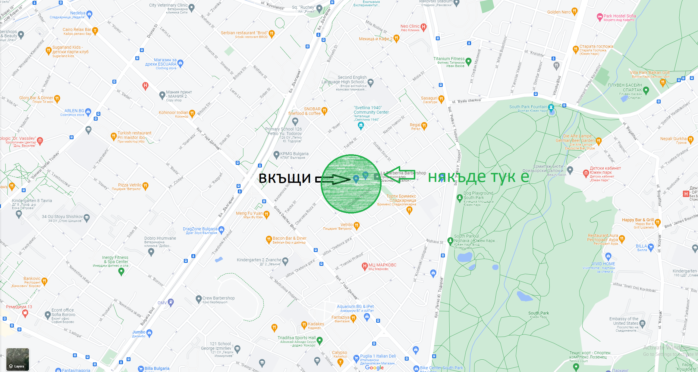

Синята къща и магазин са Фантастико и нащия блок.
Във зелено е мястото където може да е. Който първи намери хартията печели една точка и подскаска къде е следващото място, където ще е следващата хартия.
